My third Avi lab, after Getting Started with Avi for VCF and the GSLB one. This one is about moving off F5: the Avi Conversion Tool (ACT) reads an F5 BIG-IP config and turns its virtual services and iRules into Avi objects. Click any photo to enlarge it.
Lab topology
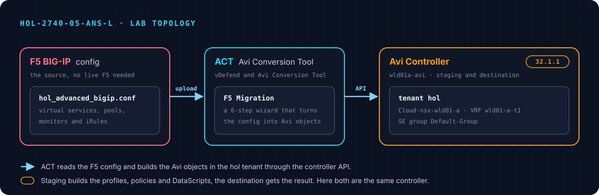
Workflow
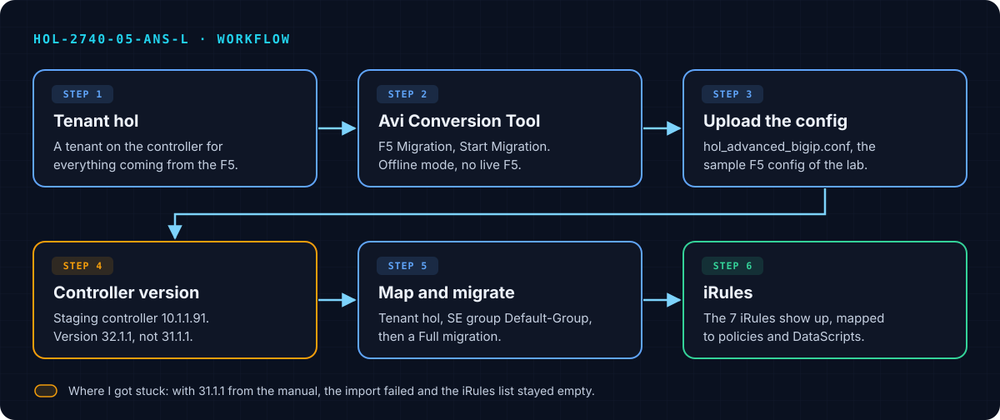
Module 1: F5 to Avi
A tenant for the migration
Everything coming over from the F5 goes into its own tenant, hol. On the site 1 controller, under Administration:
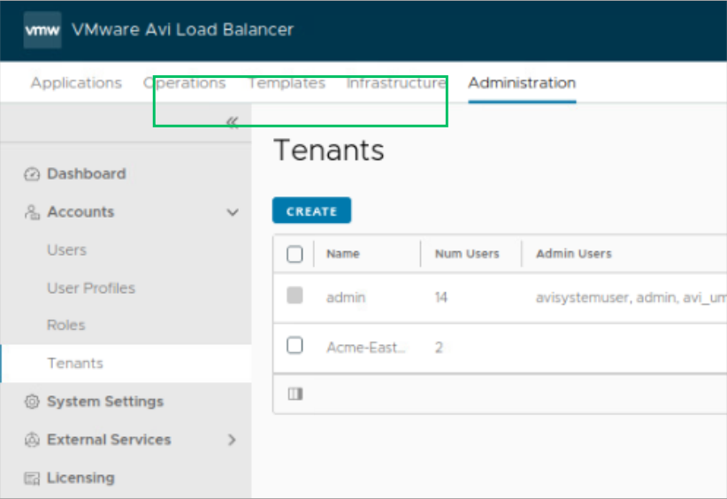
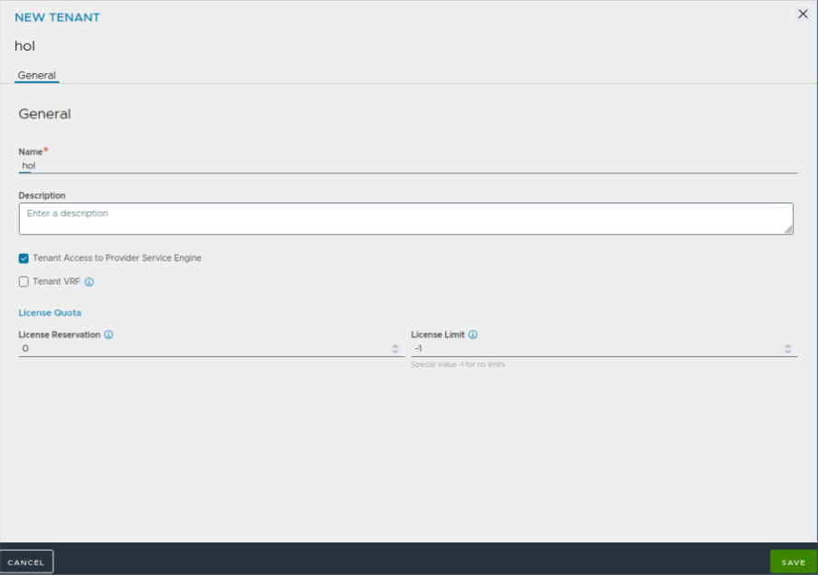
With that ticked, hol uses the Service Engines of the admin tenant and doesn't need its own.
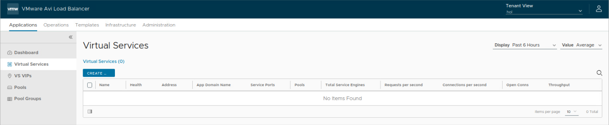
The tenant:
| hol | |
|---|---|
| Tenant Access to Provider Service Engine | On |
| Tenant VRF | Off |
| License reservation | 0 |
| License limit | -1, no limit |
Starting an F5 migration
ACT is its own web UI, in the Region A bookmarks next to the controller. It does more than F5:
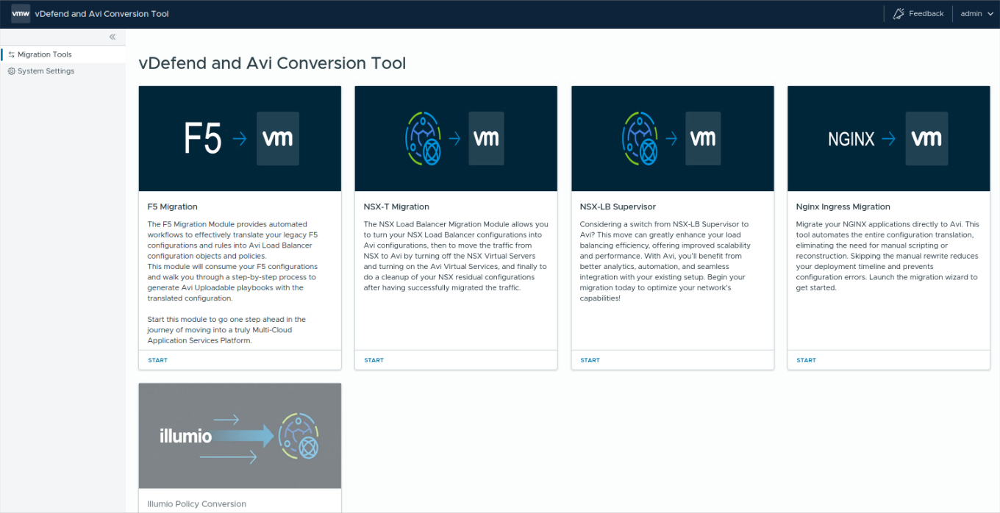
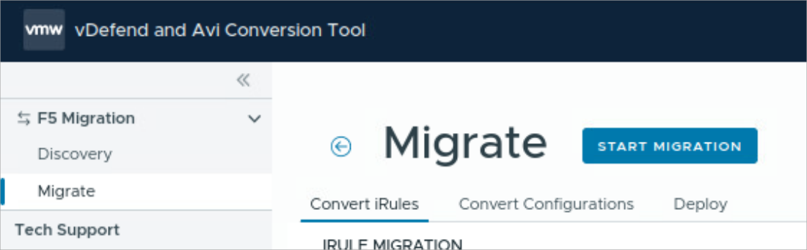
Offline mode works from the F5 config file, so there's no live F5 to connect to:
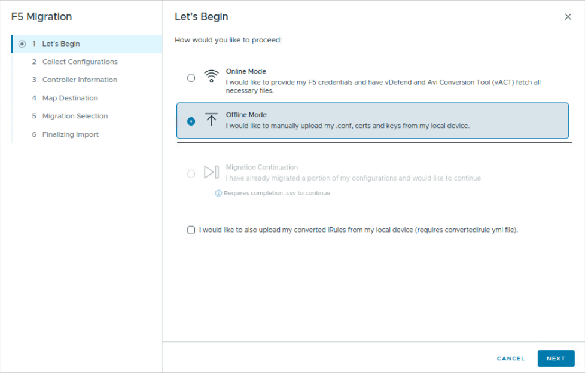
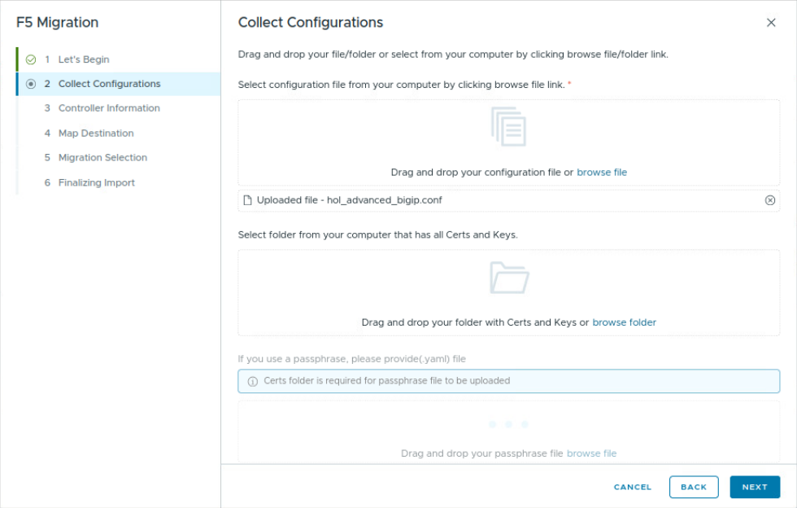
The staging controller is where ACT builds the profiles, policies and DataScripts. The destination is where the result gets deployed. In this lab they're the same controller:
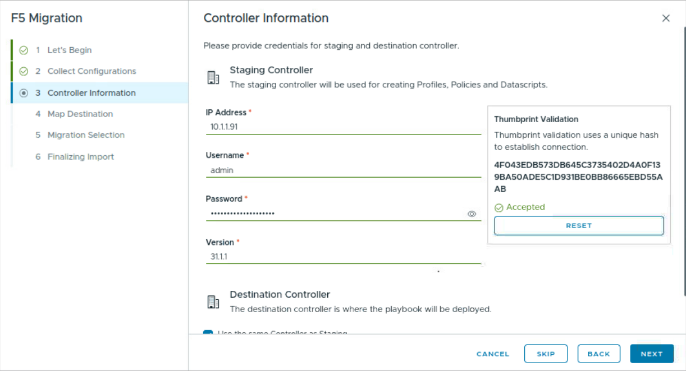
Version mismatch


The version in the wizard has to match what the controller actually runs. So I checked on the controller:
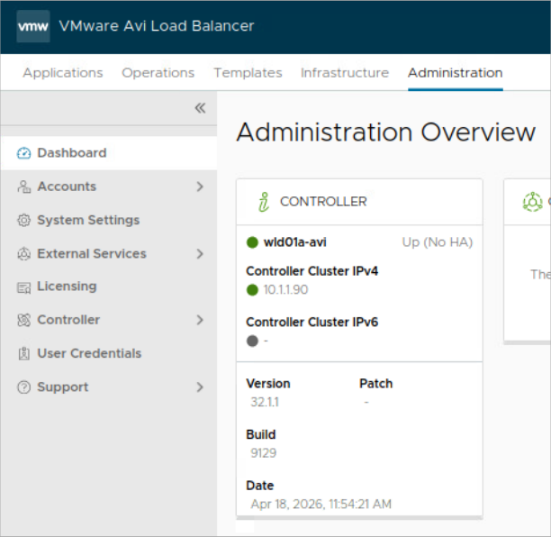
So the manual I had was out of date. Back to Controller Information with 32.1.1:
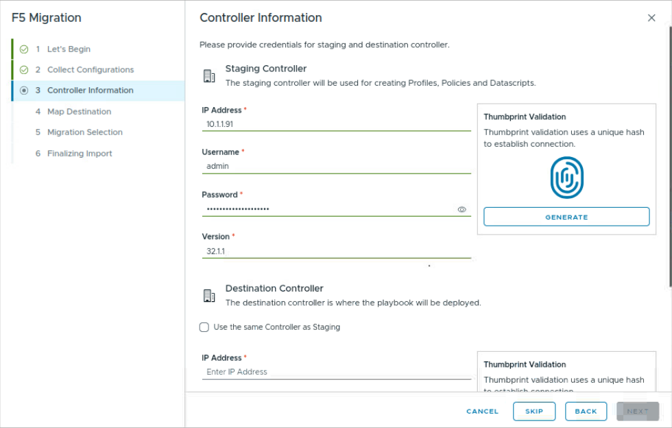
The iRules
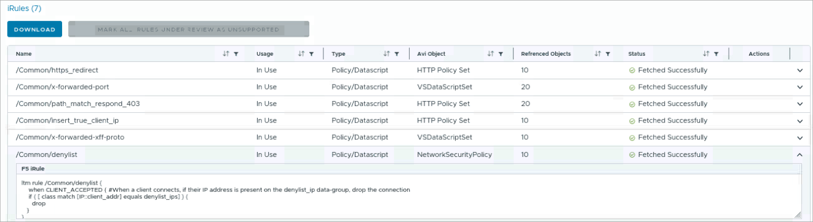
The two wizard steps between Controller Information and Finalizing Import:
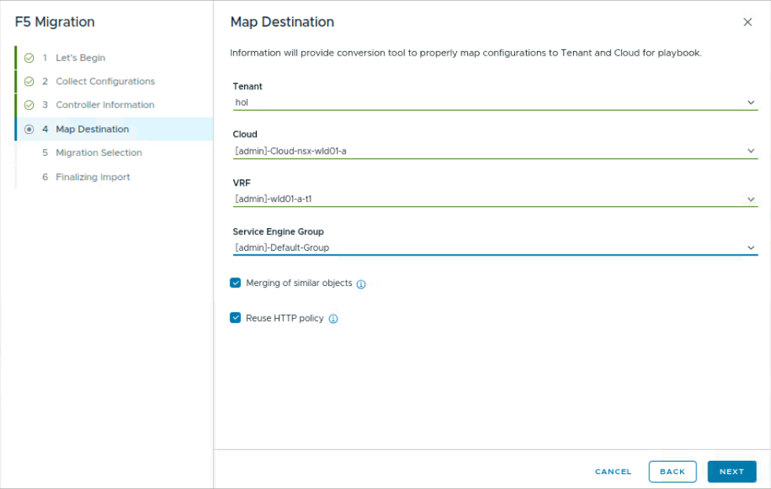
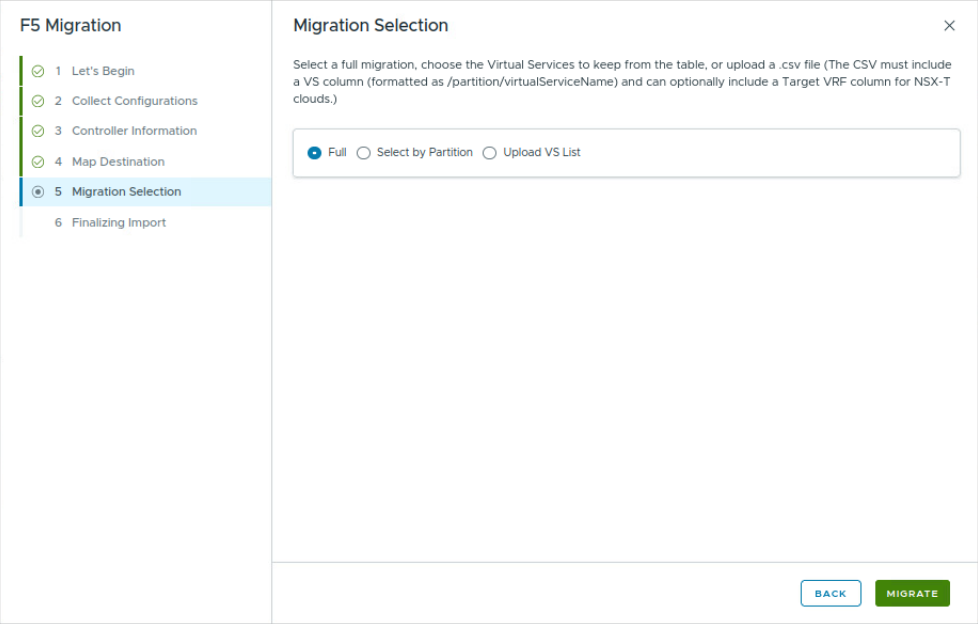
The whole wizard:
| F5 Migration | |
|---|---|
| Mode | Offline |
| Config file | hol_advanced_bigip.conf |
| Staging controller | 10.1.1.91, user admin |
| Version | 32.1.1, not 31.1.1 |
| Destination controller | Same as staging |
| Tenant | hol |
| Cloud | [admin]-Cloud-nsx-wld01-a |
| VRF | [admin]-wld01-a-t1 |
| SE group | [admin]-Default-Group |
| Merging of similar objects | On |
| Reuse HTTP policy | On |
| Migration selection | Full |
ACT turns each iRule into an Avi object. Opening one shows the original F5 iRule:
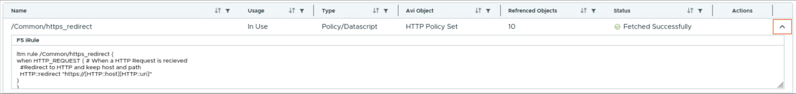
The six I could see, all in /Common and all Fetched Successfully:
| iRule | Avi object |
|---|---|
| https_ | HTTP Policy Set |
| x-forwarded-port | VSDataScript |
| path_ | HTTP Policy Set |
| insert_ | HTTP Policy Set |
| x-forwarded-xff-proto | VSDataScript |
| denylist | Network |
My screenshots stop here, at the iRules.
Key takeaways
- ACT turns an F5 config into Avi objects. iRules become HTTP policy sets, DataScripts or network security policies.
- Offline mode works from the bigip.conf file, no connection to the F5 needed.
- The staging controller builds the policies and DataScripts. It can be a separate controller, so production stays clean.
- The version in the wizard has to match the controller. Check it on the controller first.